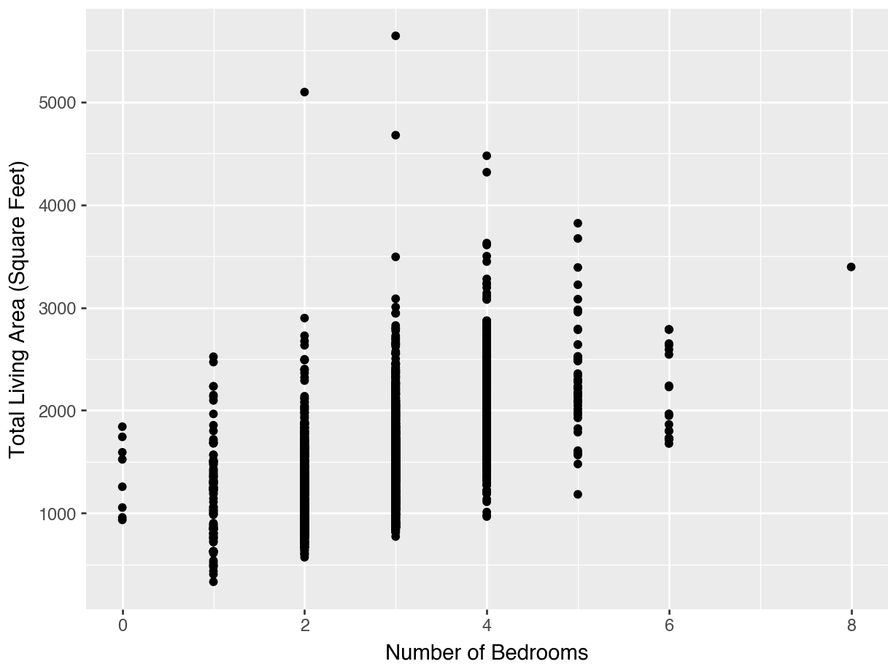
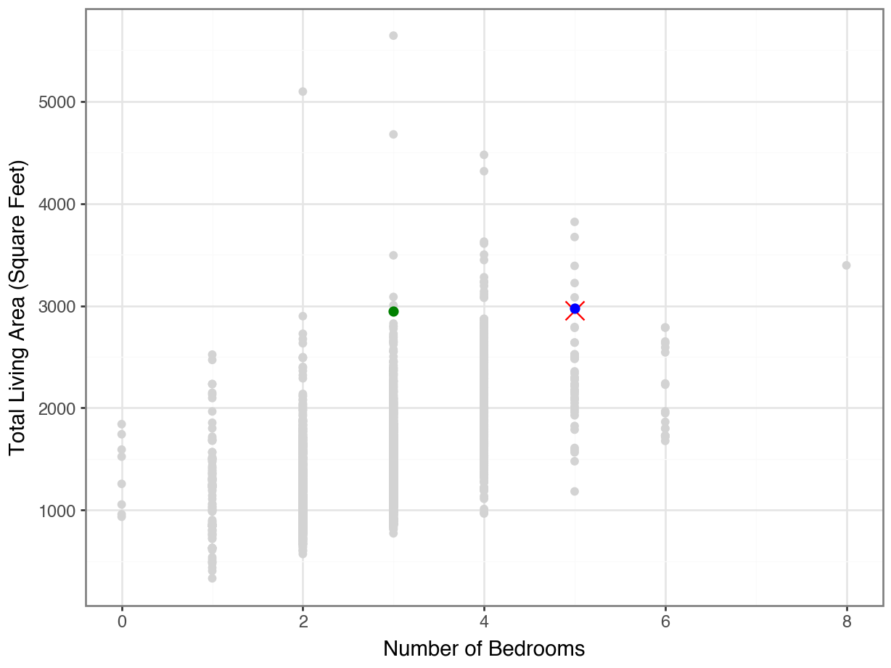
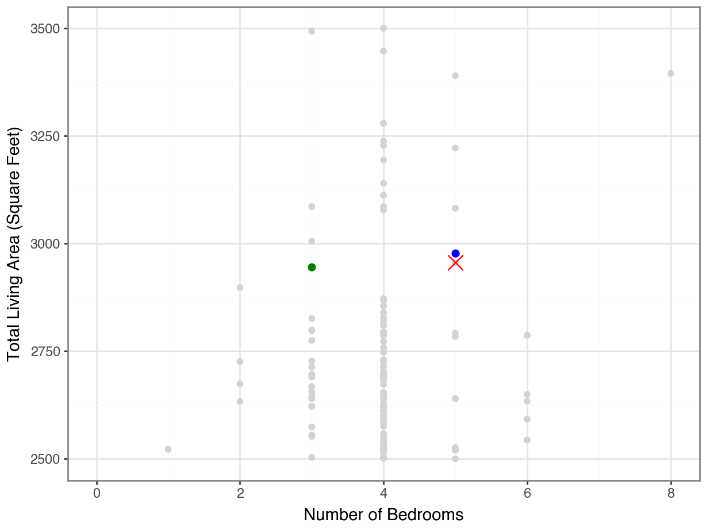
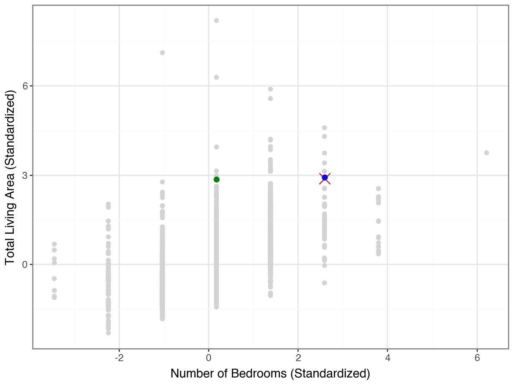

is_100m = df_bolt["Event"] == "2008 Olympics 100m"
df_100m = df_bolt[is_100m]
one_mean = df_100m["Time"].mean()
one_std = df_100m["Time"].std()
df_bolt["Standardized_Time"] = 0.0
df_bolt.loc[is_100m, "Standardized_Time"] = (df_bolt.loc[is_100m, "Time"] - Distances Between Observations
More words about ChatGPT…
What is my job?
Teaching you stuff
(Thoughtfully) choosing what to teach and how to teach it.
Assessing what you’ve learned
What do you understand about the tools I’ve taught you?
This is not the same as assessing if you figured out a way to accomplish a given task.
Using the tools I teach
. . .
event_stats = df_phelps.groupby('Event')['Time_in_seconds'].agg(['mean', 'std'])
df_phelps = df_phelps.merge(event_stats, on='Event')
df_phelps['Standardized_Time'] = (
(df_phelps['Time_in_seconds'] - df_phelps['mean']) / df_phelps['std']
)A nice clean, efficient approach
bolt_stats = (
df_bolt
.groupby("Event")["Time"]
.aggregate(["mean", "std"])
)
standardized_bolt = (
df_bolt
.set_index(['Event', 'Athlete'])['Time']
.subtract(bolt_stats["mean"])
.divide(bolt_stats["std"])
)lambda Functions
phelps_sec = (
df_phelps["Time"]
.str.split(":")
.apply(lambda x: float(x[0])*60 + float(x[1]))
). . .
df_phelps[["Minutes", "Seconds"]] = df_phelps["Time"].str.split(":")
df_phelps["Time_New"] = (
df_phelps["Minutes"].astype(float) * 60 +
df_phelps["Seconds"].astype(float)
)A loop is often not necessary
split_times = df_phelps["Time"].str.split(":")
seconds = []
for time in split_times:
minute = int(time[0])
second = float(time[1])
seconds.append((minute * 60) + second)
df_phelps["Seconds"] = secondsWhen to make a function?
def time_to_secs(time_str):
mins, secs = time_str.split(':')
return float(mins) * 60 + float(secs)
df_phelps['time_secs'] = df_phelps['Time'].apply(time_to_secs). . .
def calculate_simpson_index(values, position):
# Convert values to a Pandas Series, ensuring they are strings
values_series = pd.Series(values).astype(str)
# Extract the specified character based on the position
extracted_character = values_series.str[position]
# Calculate the frequency of each character
character_counts = extracted_character.value_counts(normalize=True)
# Compute the Simpson's Index
simpson_index = 1 - sum(character_counts ** 2)
return simpson_indexThe story so far…
Summarizing
One categorical variable: marginal distribution
Two categorical variables: joint and conditional distributions
One quantitative variable: mean, median, variance, standard deviation.
One quantitative, one categorical: mean, median, and std dev across groups (
groupby(), split-apply-combine)Two quantitative variables: z-scores, correlation
Visualizing
One categorical variable: bar plot or column plot
Two categorical variables: stacked bar plot, side-by-side bar plot, or stacked percentage bar plot
One quantitative variable: histogram, density plot, or boxplot
One quantitative, one categorical: overlapping densities, side-by-side boxplots, or facetting
Two quantitative variables: scatterplot
Today’s data: House prices
Ames house prices
df = pd.read_table("https://datasci112.stanford.edu/data/housing.tsv",
sep = "\\t")<string>:1: ParserWarning: Falling back to the 'python' engine because the 'c' engine does not support regex separators (separators > 1 char and different from '\s+' are interpreted as regex); you can avoid this warning by specifying engine='python'.df.head() PID Gr Liv Area Bedroom AbvGr ... Sale Type Sale Condition SalePrice
0 526301100 1656 3 ... WD Normal 215000
1 526350040 896 2 ... WD Normal 105000
2 526351010 1329 3 ... WD Normal 172000
3 526353030 2110 3 ... WD Normal 244000
4 527105010 1629 3 ... WD Normal 189900
[5 rows x 81 columns]read_table not read_csv
This is a tsv file (tab separated values), so we need to use a different function to read in our data! The sep argument allows you to specify the delimiter the file uses, but you can also allow the system to autodetect the delimiter.
How does house size relate to number of bedrooms?
. . .
Code
(
ggplot(df, mapping = aes(x = "Gr Liv Area", y = "Bedroom AbvGr")) +
geom_point() +
labs(x = "Total Living Area",
y = "Number of Bedrooms")
)
How does house size relate to number of bedrooms?
What statistic would you calculate?
. . .
df[["Gr Liv Area", "Bedroom AbvGr"]].corr() Gr Liv Area Bedroom AbvGr
Gr Liv Area 1.000000 0.516808
Bedroom AbvGr 0.516808 1.000000Measuring Similarity with Distance
Similarity
How might we answer the question, “Are these two houses similar?”
df.loc[1707, ["Gr Liv Area", "Bedroom AbvGr"]]Gr Liv Area 2956
Bedroom AbvGr 5
Name: 1707, dtype: objectdf.loc[290, ["Gr Liv Area", "Bedroom AbvGr"]]Gr Liv Area 2650
Bedroom AbvGr 6
Name: 290, dtype: objectDistance
The distance between the two observations is:
\[ \sqrt{ (2956 - 2650)^2 + (5 - 6)^2} = 306 \]
. . .
… what does this number mean? Not much!
But we can use it to compare sets of houses and find houses that appear to be the most similar.
Another House to Consider
df.loc[1707, ["Gr Liv Area", "Bedroom AbvGr"]]Gr Liv Area 2956
Bedroom AbvGr 5
Name: 1707, dtype: objectdf.loc[291, ["Gr Liv Area", "Bedroom AbvGr"]]Gr Liv Area 1666
Bedroom AbvGr 3
Name: 291, dtype: object. . .
\[ \sqrt{ (2956 - 1666)^2 + (5 - 3)^2} = 1290 \]
Thus, house 1707 is more similar to house 290 than to house 291.
Lecture Activity Part 1
Complete Part One of the activity linked in Canvas.
10:00
Scaling / Standardizing
House 160 seems more similar…
Code
(
ggplot(df, mapping = aes(y = "Gr Liv Area", x = "Bedroom AbvGr")) +
geom_point(color = "lightgrey") +
geom_point(df.loc[[1707]], color = "red", size = 2, shape = 17) +
geom_point(df.loc[[160]], color = "blue", size = 2) +
geom_point(df.loc[[2336]], color = "green", size = 2) +
theme_bw() +
labs(y = "Total Living Area (Square Feet)",
x = "Number of Bedrooms")
)
…even if we zoom in…
Code
(
ggplot(df, mapping = aes(y = "Gr Liv Area", x = "Bedroom AbvGr")) +
geom_point(color = "lightgrey") +
geom_point(df.loc[[1707]], color = "red", size = 5, shape = "x") +
geom_point(df.loc[[160]], color = "blue", size = 2) +
geom_point(df.loc[[2336]], color = "green", size = 2) +
theme_bw() +
labs(y = "Total Living Area (Square Feet)",
x = "Number of Bedrooms") +
scale_y_continuous(limits = (2500, 3500))
)
…but not if we put the axes on the same scale!
Code
(
ggplot(df, aes(y = "Gr Liv Area", x = "Bedroom AbvGr")) +
geom_point(color = "lightgrey") +
geom_point(df.loc[[1707]], color = "red", size = 5, shape = "x") +
geom_point(df.loc[[160]], color = "blue", size = 2) +
geom_point(df.loc[[2336]], color = "green", size = 2) +
theme_bw() +
labs(y = "Total Living Area (Square Feet)",
x = "Number of Bedrooms") +
scale_y_continuous(limits = (2900, 3000)) +
scale_x_continuous(limits = (0, 100))
)Scaling
We need to make sure our features are on the same scale before we can use distances to measure similarity.
Standardizing
subtract the mean, divide by the standard deviation
Scaling
df['size_scaled'] = (df['Gr Liv Area'] - df['Gr Liv Area'].mean()) / df['Gr Liv Area'].std()
df['bdrm_scaled'] = (df['Bedroom AbvGr'] - df['Bedroom AbvGr'].mean()) / df['Bedroom AbvGr'].std()Code
(
ggplot(df, aes(y = "size_scaled", x = "bdrm_scaled")) +
geom_point(color = "lightgrey") +
geom_point(df.loc[[1707]], color = "red", size = 5, shape = "x") +
geom_point(df.loc[[160]], color = "blue", size = 2) +
geom_point(df.loc[[2336]], color = "green", size = 2) +
theme_bw() +
labs(y = "Total Living Area (Standardized)",
x = "Number of Bedrooms (Standardized)")
)
Lecture Activity Part 2
Complete Part Two of the activity linked in Canvas.
10:00
Scikit-learn
Scikit-learn
scikit-learnis a library for machine learning and modelingWe will use it a lot in this class!
For now, we will use it as a shortcut for scaling and for computing distances
. . .
The philosophy of
sklearnis:- specify your analysis
- fit on the data to prepare the analysis
- transform the data
Specify
from sklearn.preprocessing import StandardScaler
scaler = StandardScaler()
scalerStandardScaler()In a Jupyter environment, please rerun this cell to show the HTML representation or trust the notebook.
On GitHub, the HTML representation is unable to render, please try loading this page with nbviewer.org.
StandardScaler()
No calculations have happened yet!
Fit
The scaler object “learns” the means and standard deviations.
df_orig = df[['Gr Liv Area', 'Bedroom AbvGr']]
scaler.fit(df_orig)StandardScaler()In a Jupyter environment, please rerun this cell to show the HTML representation or trust the notebook.
On GitHub, the HTML representation is unable to render, please try loading this page with nbviewer.org.
StandardScaler()
scaler.mean_array([1499.69044369, 2.85426621])scaler.scale_array([505.4226158 , 0.82758988]). . .
We still have not altered the data at all!
Transform
df_scaled = scaler.transform(df_orig)
df_scaledarray([[ 0.30926506, 0.17609421],
[-1.19442705, -1.03223376],
[-0.33771825, 0.17609421],
...,
[-1.04801492, 0.17609421],
[-0.21900572, -1.03223376],
[ 0.9898836 , 0.17609421]], shape=(2930, 2))sklearn, numpy, and pandas
By default,
sklearnfunctions returnnumpyobjects.This is sometimes annoying, maybe we want to plot things after scaling.
Solution: remake it, with the original column names.
. . .
pd.DataFrame(df_scaled, columns = df_orig.columns) Gr Liv Area Bedroom AbvGr
0 0.309265 0.176094
1 -1.194427 -1.032234
2 -0.337718 0.176094
3 1.207523 0.176094
4 0.255844 0.176094
... ... ...
2925 -0.982723 0.176094
2926 -1.182556 -1.032234
2927 -1.048015 0.176094
2928 -0.219006 -1.032234
2929 0.989884 0.176094
[2930 rows x 2 columns]Distances with sklearn
from sklearn.metrics import pairwise_distances
pairwise_distances(df_scaled[[1707]], df_scaled)array([[3.52929876, 5.45459713, 4.0252646 , ..., 4.61305666, 4.76999349,
3.06886734]], shape=(1, 2930))Finding the Most Similar
dists = pairwise_distances(df_scaled[[1707]],
df_scaled)
dists.argsort()array([[1707, 160, 909, ..., 158, 2723, 2279]], shape=(1, 2930))best = (
dists
.argsort()
.flatten()
[1:10]
)
df_orig.iloc[best] Gr Liv Area Bedroom AbvGr
160 2978 5
909 3082 5
1288 2792 5
2350 2784 5
253 3222 5
2592 2640 5
585 2640 5
2027 2526 5
2330 3390 5Lecture Activity Part 3
Complete Part Three of the activity linked in Canvas.
10:00
Alternatives
Other scaling
Standardization \[x_i \leftarrow \frac{x_i - \bar{X}}{\text{sd}(X)}\]
Min-Max Scaling \[x_i \leftarrow \frac{x_i - \text{min}(X)}{\text{max}(X) - \text{min}(X)}\]
Other distances
Euclidean (\(\ell_2\))
\[\sqrt{\sum_{j=1}^m (x_j - x'_j)^2}\]
Manhattan (\(\ell_1\))
\[\sum_{j=1}^m |x_j - x'_j|\]
Lecture Activity Part 4
Complete Part Four of the activity linked in Canvas.
10:00
Takeaways
Takeaways
We measure similarity between observations by calculating distances.
It is important that all our features be on the same scale for distances to be meaningful.
We can use
scikit-learnfunctions to fit and transform data, and to compute pairwise distances.There are many options of ways to scale data; most common is standardizing
There are many options of ways to measure distances; most common is Euclidean distance.